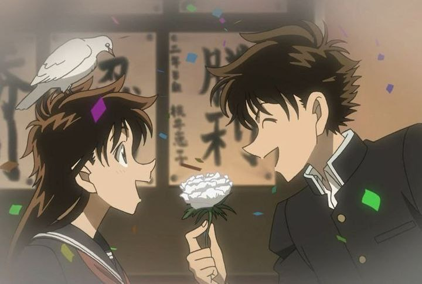
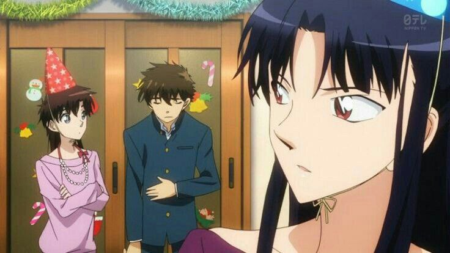
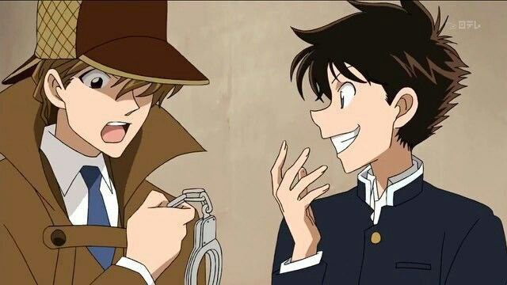
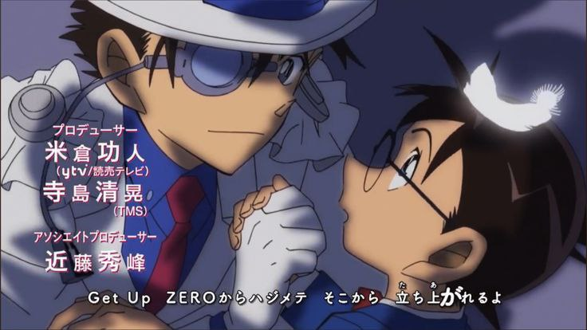
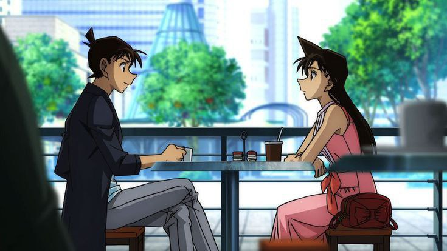
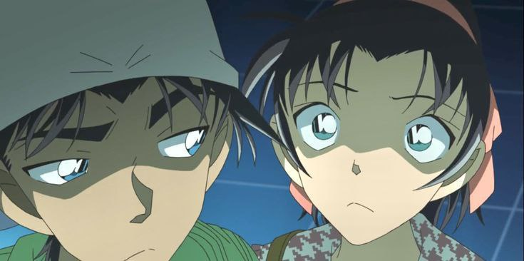
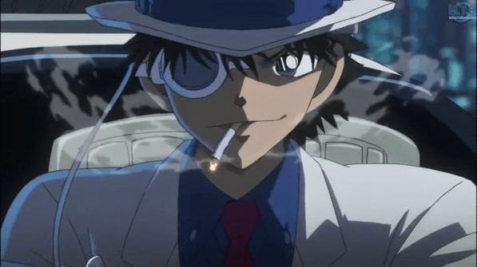

Contents
Family and friends
Aoko Nakamori

Kaito and Aoko Nakamori have been best friends since they were little and first met at the clock
tower. They are portrayed as a similar pairing to Shinichi Kudo and Ran Mouri (including how the
characters are drawn) and Heiji Hattori and Kazuha Toyama, except much sillier. Kaito often teases Aoko by
flipping her skirt. However, it has been seen that Kaito is quite protective of Aoko and doesn't appear to
want her to go on a date with Saguru Hakuba. Aoko was somewhat suspicious that Kaito was Kaitou Kid, and
in order to prove his innocence, she brought him along to a movie when a heist had been scheduled. She
handcuffed him to the seat, but Kaito managed to escape and pull off the heist, thus veering Aoko's
suspicions away from him. The two have feelings for one each other, but neither has admitted it as of yet.
In the last chapter of Yaiba a scene set after a three years time skip has Keiko Momoi telling Sayaka
Mine
that Kuroba and Nakamori are a couple now, while Keiko's friend confirms having seen them together.
Akako Koizumi

Christmas episode Magic Kaito 1412
Saguru Hakuba

The relationship between Hakuba and Kaito is a rather tense one; since Saguru convinced himself early
on
that Kaito was instead Kid, and during the first few volumes he's constantly throwing out offhand
comments
that show his suspicion. However, later on in the manga, we have a small scene where Saguru calls
Kaito
from Paris in order to give him some information on 'Chat Noir', a dangerous, fellow gem thief trying
to
outshine Kid. Though Kaito continues to vehemently deny being Kid, Saguru gives him the information
anyways, ending the conversation with, "Do your best at least. I don't want to see you lose to anyone
before I capture you myself". Whether or not that was his actual motive, or if he was merely concerned
for
Kaito's well being, is unknown.
Others
Conan Edogawa

Detective Conan opening 53 (ZERO kara Hajimete)
Before being shrunk, Shinichi had encountered Kaitou Kid once during the Clock Tower heist, though they
did not meet face-to-face. In their next encounter, however, after Shinichi had become Conan, Kid
disguised himself as Ran to steal the Suzuki Black Star pearl. When Conan cornered him on the Suzuki
cruise ship, Kid suggested that he'd stolen all of Ran's clothes to impersonate her, and left her naked on
the deck. While this ended up being a bluff, Conan was shocked and infuriated. In subsequent encounters
between Kid and Conan, Conan displays a much more intense desire to capture Kid.
Since then, Conan is usually a serious threat to Kid's plans and stops Kid often enough from escaping with
the jewel that Conan has gained a reputation in the press as Kid's "natural enemy". In several instances
Conan appears to be able to 'sense' Kid's presence; knowing Kid is close by often causes Conan to behave
far more frenetically. Appropriately, Kid seems to find Conan dangerous enough to warrant specific
measures to keep the boy distracted. Conan does not seem to like Kid, saying once "He's only a thief that
uses magic". However, if necessary, the two can put their rivalry aside (for a little while) and work
together. Conan has something of a gentleman's agreement with Kaitou Kid that he won't look for the
thief outside of heists. In several instances, beginning with the "Big Adventure in the Eccentric
Residence" case, when Kid does Conan/Shinichi a favor, such as saving Genta's life in the aforementioned
case, Conan reciprocates by halting his investigation just shy of capturing Kid, thereby allowing him to
escape mostly unhindered. This exchange of favors can sometimes become a bit unbalanced; Conan was
perfectly willing to force Kaitou Kid against his will into facing a member of the Black Organization at
gunpoint in a carriage filled with explosives.
In the movies, Kid becomes aware that Conan is Shinichi after he once overheard Conan talking to Professor
Agasa and displaying too much criminal knowledge for a 7-year-old. As a result, he ends up using
Shinichi's identity to either further his own goals and challenge Conan at the same time, or to pay back a
favor Conan has done him. Since movies cannot be considered canon, it was once unclear whether Kid knows
Conan is Shinichi in the official manga. However, since "Kaitou Kid and the Trick Box" case, it is clear
that Kid does not know Conan's true identity because he called him "Conan-kun" and not "Shinichi" while
they were alone. There are also some speculations on Conan figuring out that Kid isn't just stealing
randomly. At the end of the OVA 4: Conan, Kid, and the Crystal Mother, Conan had turned with a serious
face when he remembered a phrase that Kid had said, "Next time, I'll help myself to the Jewel of Destiny."
In movie 14, Conan asked for Kid to disguise himself as him for a while.
In chapter 1018 of the manga Kid is shown thinking "What's this? Two high school detectives..." while the
only high school detectives that appeared, in that case, were Heiji and Conan, making it very likely that
Kid is aware of Conan's identity but nothing has been officially stated or confirmed.
Ran Mouri

Kaito disguised as Shinichi in Detective Conan movie 23
Heiji Hattori

Kaito disguised as Kazuha
Lupin III

Lupin III disguised as Kaito Kid in Lupin III vs Detective Conan (2013)